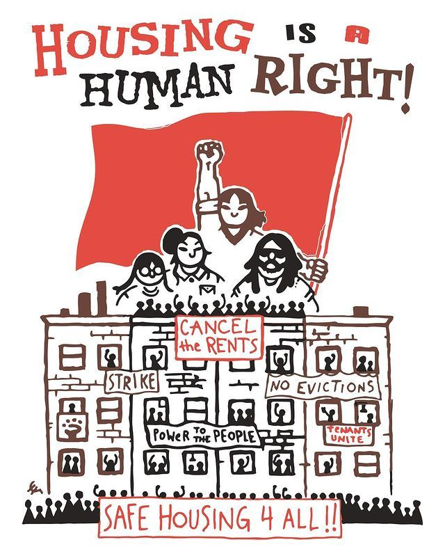
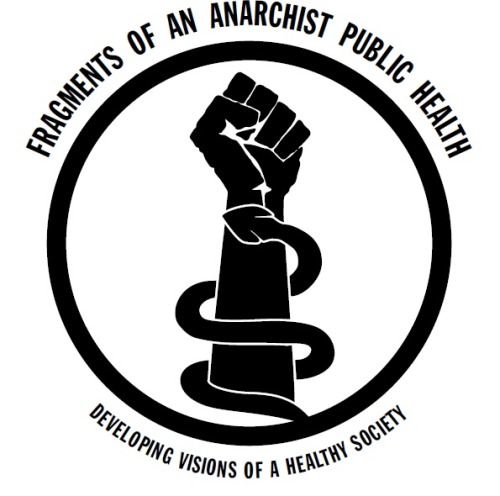
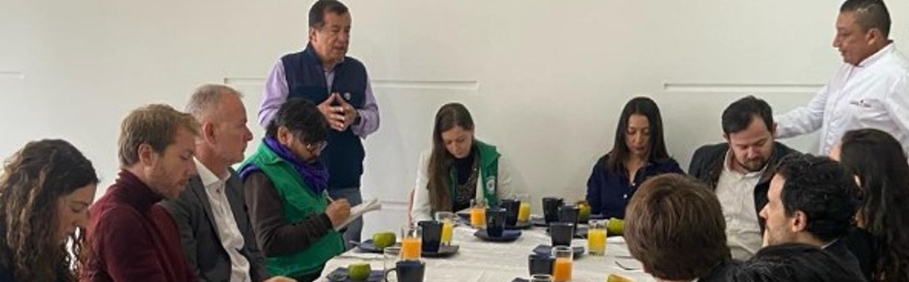
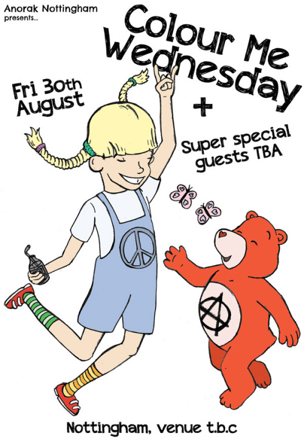

Our Mission
Our mission is to build a resilient and supportive community where everyone has access to the resources they need to thrive. We believe in mutual aid, solidarity, and collective care.
About Us
Founded in 2020, Underground Mutual Aid is run by a team of dedicated volunteers who are passionate about helping others. Our team includes community organizers, social workers, and everyday people who believe in the power of collective action.
Location and Directions
We are located at 123 Mutual Aid Street, Community City. Use the map below to find us:
Prepare for Your Visit
When visiting us, please bring any necessary documents and be prepared to fill out a short form. We look forward to assisting you!
Food Support
Access free meals, groceries, and community kitchens.
Housing Assistance
Find shelter, eviction support, and affordable housing resources.
Medical Aid
Get help with medical bills, prescriptions, and mental health services.
Legal Help
Connect with legal aid for housing, employment, and immigration issues.
Childcare
Find free or low-cost childcare services in your area.
Emergency Funds
Apply for financial assistance during emergencies.